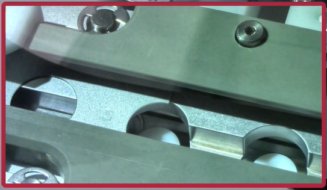

This procedure is used to adjust the Eclipse 5300 filter changer escapement, chute, inserter, and filter belt. It is recommended that this procedure be performed during each preventive maintenance (PM) cycle or anytime after a filter belt is removed for inspection or replacement. This procedure is intended to be performed only by trained personnel.
·5300 w / Filter Changer
Item |
Description |
Part Number |
1 |
Inserter Block Alignment Tool |
3252-0018 |
2 |
Chute Alignment Tool |
3252-0019 |
3 |
Inserter Alignment Tool |
3252-0033 |
4 |
Filter Changer Belt |
3250-0264 |
·Philips Screwdriver
·Hex Key / Screwdriver Set
·Magnetic Interlocks
·Distek Syringe Filters
Follow this procedure to replace the filter changer belt.
1.Power down the unit.
2.Remove the side covers exposing the filter changer and install magnetic interlock(s).
Note: Depending on the type of magnetic interlock used, it may be necessary to remove the back panel.
3.Pull the belt out of the unit and remove the two screws fastening the belt. Remove the belt.
4.Install the new belt by inserting in into the slit and securing it using the two screws. Ensure the orientation is correct.
5.Wind the belt into the track ensuring there is no slack.
6.Pull the belt out and align the 4th center hole with the edge of the bracket.
7.Thread the belt into the track ensuring that the belt moves in smoothly and there is no slack. Keep feeding the belt until the 4th center hole is visible and large holes are aligned with the bracket holes.
8.Power on the unit. Filter changer should initialize without jamming and should default to the following location on the track:

9.If the unit fails to initialize properly, pull the belt out fully and repeat procedure from step 5.
Follow this procedure to perform adjustments on components of the Filter Changer Assembly.
1.Power down the unit.
2.Remove the side covers exposing the filter changer and install magnetic interlock(s).
4.Insert chute alignment tool. The tool should be able to slide fully into chute and reach inserter without any resistance. If successful, skip to step #7.
5.If adjustments need to be made to the chute, remove the four screws that secure the turret turntable guard. Remove guard and set aside.
6.Loosen the two screws on the filter chute and make the necessary adjustments. Tighten screws to secure chute. Repeat step 4 to retest alignment.
7.Working at the turret base plate, loosen the top left corner screw and remove the top right, and both bottom screws. This will allow the plate to swivel out.
8.With the inserter fully extended, insert inserter block alignment tool.
9.Verify that the filter holes line up with the tip of the tool. If successful, continue to step 11.
10.If adjustments need to be made to the inserter block, loosen the two screws that secure the inserter block to the inserter chassis. Slide the block until the tool is in alignment with the belt. Tighten the screws to set lock the block in place.
11.Power on and initialize the unit.
12.Navigate to Settings > System Settings > Autosampler Positioning. Select Filter Changer option to calibrate escapement, inserter, and the filter belt.
13. To calibrate escapement, select Escapement in the filter changer calibration menu. Use the left and right controls to adjust the escapement hammer so it is slightly left of center when contacting the filter ejector pin. Verify and repeat if necessary.
14. To calibrate the inserter, place inserter alignment tool against the inserter chassis. Select the Inserter in the filter changer calibration menu, move the controls left or right to align the tool with the frame.
Note: Once the inserter is aligned to the frame, click "left" two times to back the inserter off.
15. To calibrate the filter belt, begin by loading up the filter carrier with at least two rows worth of syringe filters.
16. Select the Filter Belt option in the calibration menu. The unit will install a row of syringe filters. Using the Left, Right, move the belt to align the center of the syringe filter connector with the luer tips.
17.Once complete, select the Verify button and another set of filters will be inserted into the belt. Make any additional adjustments if necessary. Repeat Step 15 should additional filter belt verifications be necessary.
18.Select "Done" when filter adjustment and additional verification are complete.